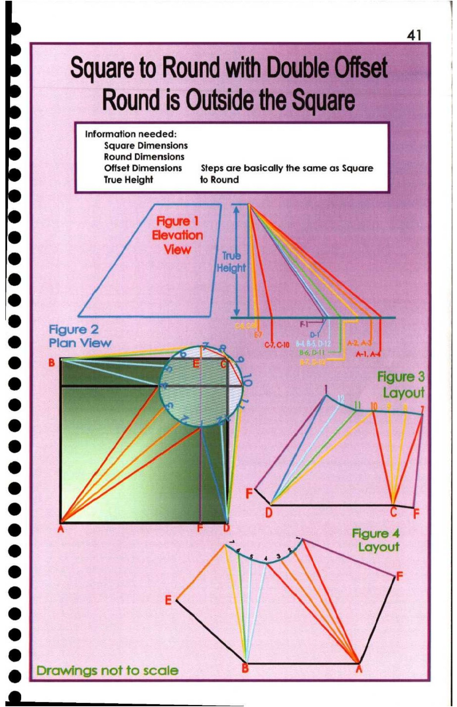

41. Square to Round (Double Offset) Round is Outside the Square

|
Square fo Round with Double Offset |
Round is Outside the Square |S
Figure 1 \
° MA
Figure 2 ai |
7 |
Ad q rg
e = Figure 4
@ S : Layout
ie F
e
t
@
e
e Drawings not to scale
@ si ies